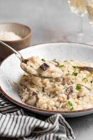

Risotto

An authentic Italian style risotto dish, cooked the right way, slowly.
Ingredients
- Olive oil
- 1 red onion
- 3 cloves of garlic
- 200g sliced mixed mushrooms
- 500g Risotto rice
- 125ml dry white wine
- 1l of vegatable stock
- 250g parmesan
- 100g butter
Method
- Finely chop the onion and garlic.
- In the olive oil fry the onion and garlic until soft.
- Add the sliced mushroom and cook of 2 minutes.
- Add the rice, stiring to absorbs all the fluid.
- Add the wine and stir until the alcohol has cooked off.
- Adding part of the stock to just cover the rice, stir adding adding stock gently ensuring the rice is just covered.
- Once all the stock is added turn off the heat and stir in the butter and parmesan.
- Leave to rest for 5 minutes and then serve.
Return to homepage